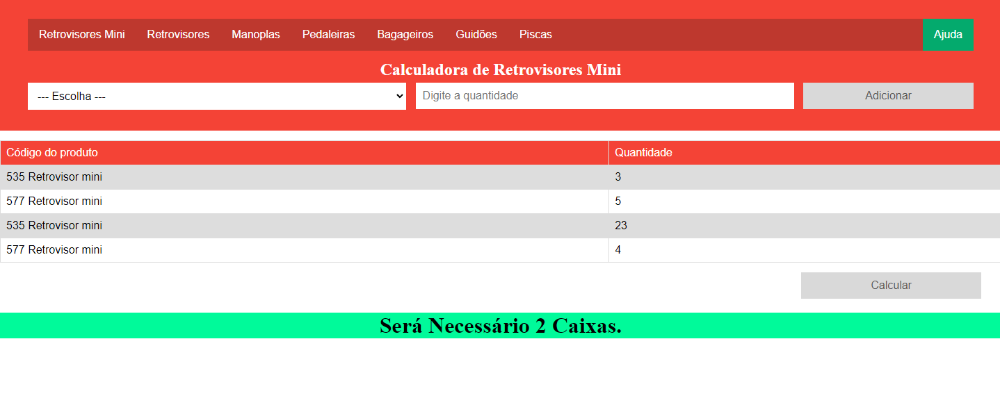

Portfolio do Alysson
Projetos
Sobre mim
Contatos
Projetos
Desde quanto eu conheci a programação eu desenvolvi vários "Hello World", brincadeiras a parte aqui está alguns de meus projetos:
Calculadora de caixas no palete.

Esse projeto estava elaborando para a empresa que trabalhava, consistia em calcular a quantidade de itens no pedido, e dizer ao usúario a quantidade de caixas que seria utilizada (Cada caixa era possivel colocar 24 unidades de um determinado item).
Infelizmente não trabalho mais lá e o projeto acabou ficando apenas com uma prévia, sem finalizar.
Menu para um restaurante
Estou desenvolvendo esse cardápio digital para um restaurante localizado no centro de Araraquara, fui lá e percebi que o cardápio digital deles não se adequava muito bem aos conceitos de UI/UX.
Sugeri a ideia para um dos proprietários e logo de cara ele topou. Tive que aprender um pouco de JavaScript para fazer o Navbar responsivo.
Atualmente estou atualizando esse projeto para div's invés de utilizar table's, mas logo estará concluído.